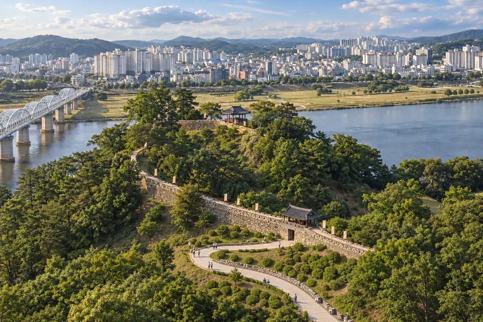
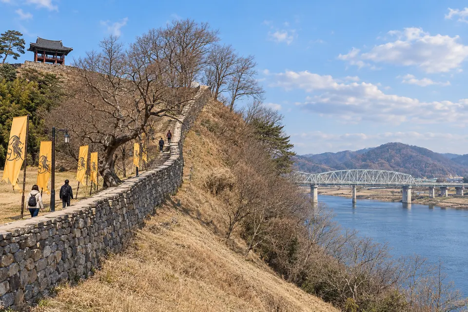
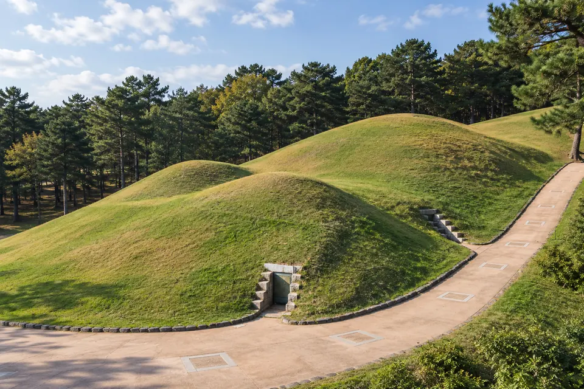
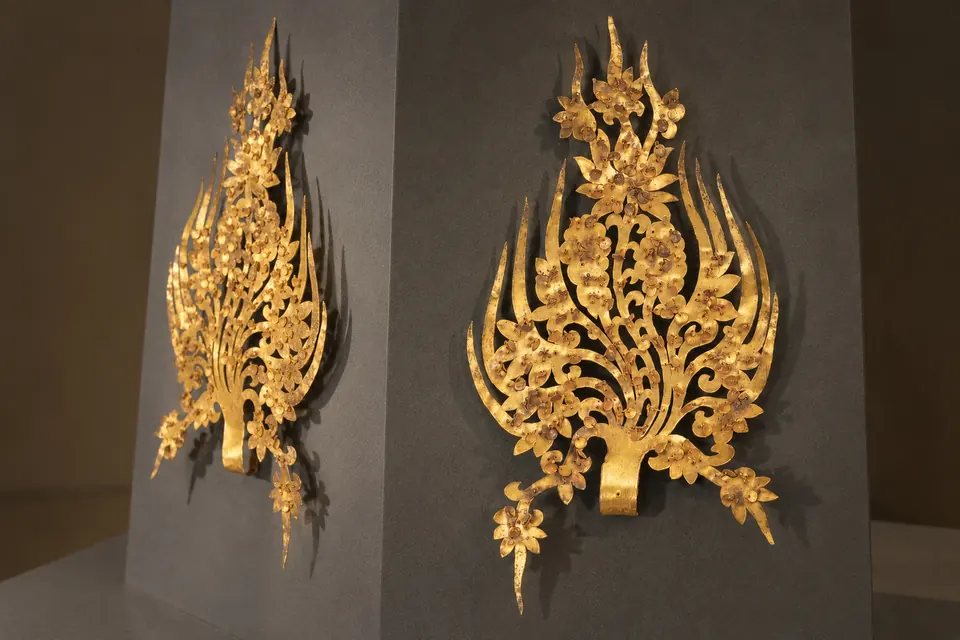
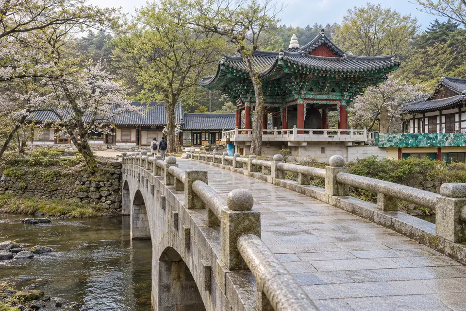
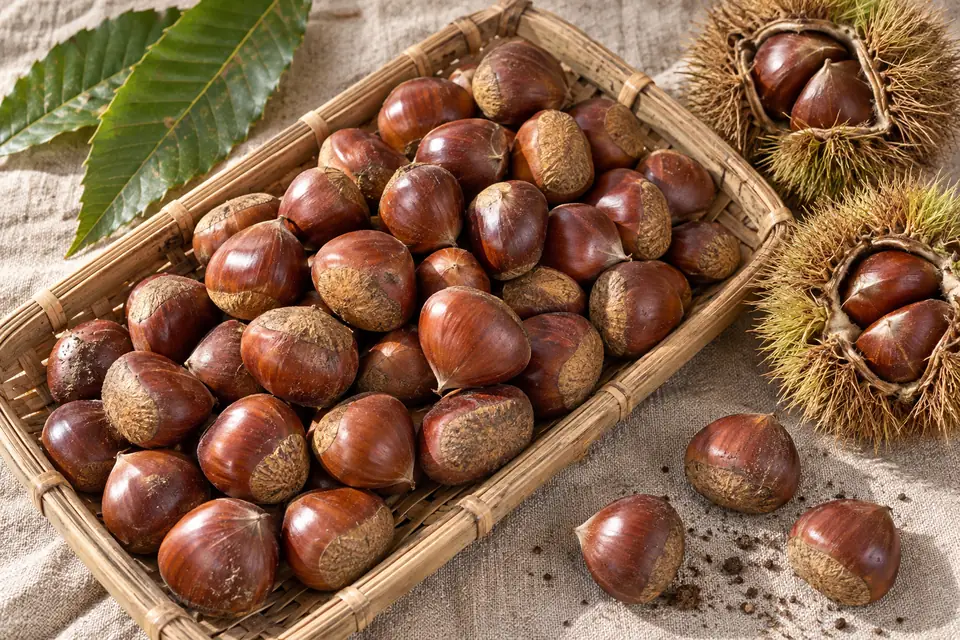
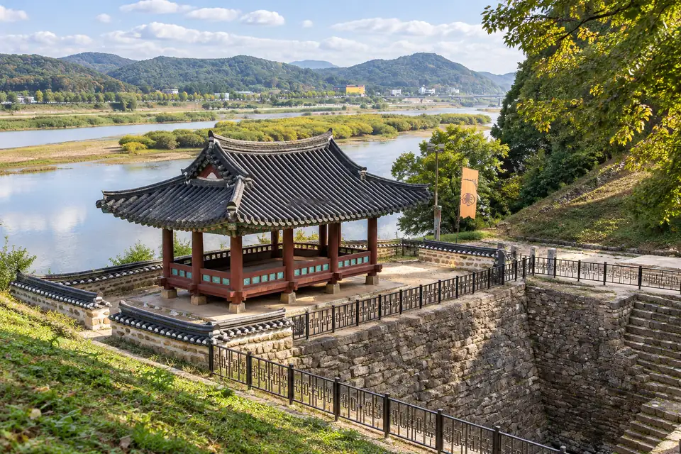

Where in South Korea? Open locator ↗
Gongju
The Baekje Royal City on the Geum, Where the River Is Both the Beauty and the Risk

A small, unhurried river town that was once a royal capital: the Gongsanseong fortress above the Geum River, the tomb of King Muryeong found intact in 1971, the UNESCO mountain temple of Magoksa, and Sejong and Daejeon next door
Deep heritage at an easy, affordable scale, in the middle of the country, next to the administrative capital, in the standard seismic band and far from typhoon surge
The Geum River floods: in July 2023 floodwater reached the roof of Gongsanseong's riverside Manharu pavilion; the KTX station is about 15 km out of town, with far fewer trains than Osong; a quiet economy
Gongju KTX station about 15 km south, 18 trains a day to Yongsan in about 1 h; Osong and Daejeon KTX about 35 km; about 11 airport buses a day to Incheon
Why Gongju Ranks Seventh
Gongju is the gentlest town on this list: small, green, walkable, cheap, and full of a history that most foreigners have never heard of. For sixty-odd years in the fifth and sixth centuries it was Ungjin, the capital of the Baekje kingdom, and its fortress, royal tombs and nearby mountain temple are all UNESCO World Heritage. It sits in the middle of the country, in the standard national seismic band and far from any coast, beside the new administrative city of Sejong and within easy reach of Daejeon. It ranks seventh for two reasons. The first is the river: the Geum floods, and in July 2023 the water rose so high at Gongsanseong that it reached the roof of the riverside Manharu pavilion. The second is access: Gongju's KTX station, opened in 2015, is about 15 km out of town, with 18 trains a day to Seoul against well over a hundred at Osong, so for many journeys the practical railheads are Osong and Daejeon. Neither is a reason to rule the town out; both shape where and how to buy.
- Region
- Chungcheongnam-do (South Chungcheong) · central Korea, adjoining Sejong Special Self-Governing City
- Population
- 99,481 (Ministry of the Interior and Safety, August 2026, Korean nationals, whole city)
- Setting
- River town on the Geum, the old town on the south bank below Gongsanseong, newer districts on the north bank; Gyeryongsan to the east
- Access
- Gongju station on the Honam high-speed line, about 15 km south of the old town, 18 trains a day to Yongsan · Osong and Daejeon KTX about 35 km · express bus to Seoul · Cheongju airport about 55 km
- Hazard profile
- Seismic Zone I · inland, no typhoon surge · Geum River flooding (July 2023) · monsoon rain on steep valleys
- Heritage
- Baekje Historic Areas (UNESCO 2015): Gongsanseong and the Songsan-ri royal tombs, including King Muryeong's · Magoksa (UNESCO Sansa, 2018) · Gongju National Museum
- Healthcare
- Gongju Medical Center (public), a designated local emergency institution with a 24-hour emergency room · Chungnam National University Hospital in Daejeon and its Sejong branch
- The differentiator
- A royal capital at village pace, beside Korea's administrative city
- Inside the dossier
- 27 pages on Gongju: pages 168–194 of the South Korea field study.
Gongju & Its Surroundings
Read the streets, water and surrounding settlements in their real geographic setting.
Live map requires a connection. Place marker shows the town centre; this is not a route or a property boundary.
Gongju, Read Five Ways
Natural Hazard
MEDIUM. Seismic Zone I, inland, with no typhoon surge. The known risk is the Geum River: in July 2023 floodwater reached the roof of the Manharu pavilion at Gongsanseong, during national floods that killed 47 people, 14 of them in the Osong underpass about 40 km away. Riverside and low-lying lots need the flood map.
Access
MEDIUM. Gongju KTX station, opened in 2015 on the Honam high-speed line, is about 15 km south of the old town, with 18 trains a day to Seoul, far fewer than Osong. Osong and Daejeon, each about 35 km away, have frequent KTX services. Express buses reach Seoul, and Cheongju airport is about 55 km away.
Scenery and Culture
HIGH. Gongsanseong fortress above the river, the Songsan-ri royal tombs and King Muryeong's treasures in the national museum, Magoksa temple, Gyeryongsan National Park, and the Baekje Cultural Festival.
Rental Viability
LOW to MEDIUM. Domestic heritage tourism and a university support some demand, and Sejong's government workforce is nearby; but the town is small, tourism is seasonal, and short-let rules are strict.
Practical Living
MEDIUM. A small city of about 99,000 with a public medical centre, Kongju National University, markets and shops; Sejong and Daejeon, with university hospitals and big-city retail, are within about half an hour to an hour.
Gongju in 8 Pictures






Edited Atlas images. Original proportions are preserved. Source and modification notes accompany each image; these are not live views of current conditions.
Free profile adapted from the verified South Korea dossier, edition of 26 September 2026. The order is editorial, not a safety certificate or a prediction of price or income. About the dossier.